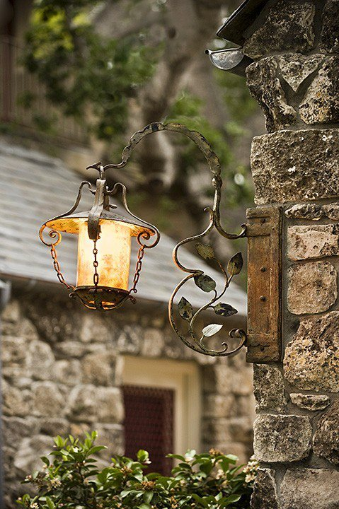

Byliśmy rodzeństwem, jakby przed praczasem
Tyś była przeciwieństwem wszelkiego zwątpienia, byłaś dla mnie świadectwem tego, że wszystko, czegokolwiek się dotkniesz, na co spojrzysz, co osiągasz, że to istnieje naprawdę.
Rilke i Lou. Historia będąca najpiękniejszym przykładem tego, że zauroczenie, miłość i namiętność mogą przerodzić się w dozgonną przyjaźń.
Od pierwszych chwil znajomości połączyło ich gwałtowne uczucie szczerej miłości, nieposkromionej namiętności oraz głębokiego przywiązania. Lou staje się dla Rilkego powiernicą i opiekuńczym duchem, nauczycielką, wiodącą go po utartych szlakach i bezdrożach literatury. Dzięki niej poeta poznaje luminarzy kultury europejskiej, gości w salonach Monachium, Berlina, Moskwy, St. Petersburga, Wiednia.
Razem spędzają szczęśliwe tygodnie w Wolfratshausen w dolinie Izary, pośród radości lata i nieogarnionych krajobrazów. Każdego dnia o brzasku wyruszają na wspólne spacery po lesie, brodząc bosymi stopami po zroszonej trawie i odkrywając nieprzeparty urok owej prostoty życia. Razem udają się dwukrotnie w podróż do Rosji, ojczyzny Lou, która dla Rilkego stanie się ojczyzną duchową — nieprzebranym źródłem naznaczonych mistycyzmem idei, obrazów, błogodźwięków wypełniających karty jego „Księgi godzin”.
I choć po trzech latach codziennego z sobą obcowania, dzielenia wszelkich myśli i doznań oraz wspólnych studiów nad sztuką renesansu i literaturą rosyjską, żarliwość łączącego ich uczucia przygasa, zaś myśl o nieuchronnym rozstaniu nurtuje coraz bardziej, to jednak ta niezwyczajna miłość nigdy nie zamiera, pozostawiając żegnającym się kochankom kojącą nadzieję, iż „jeśliby kiedykolwiek w przyszłości było Ci ciężko na duszy, znajdziesz u nas zawsze dom w tej najgorszej godzinie”.
Od tygodni pragnę Ci napisać te słowa i waham się, z lęku, czy to nie nazbyt wcześnie, lecz któż wie, czy będę mógł przybyć do Ciebie w cięższej jeszcze dla mnie godzinie.
Tym zdaniem Rilke przerywa w czerwcu roku 1903 ponaddwuletni okres milczenia. W owej „najgorszej godzinie” wyrywa się z jego serca wołanie do Lou. A Lou? Lou nie zapomniała o swym najdroższym przyjacielu, toteż odpowiada na jego list szczerym i ciepłym słowem:
Zawsze znajdziesz u nas gościnę zarówno w ciężkich, jak i w dobrych chwilach.
To początek ciągnącej się nieprzerwanie aż do śmierci poety korespondencji, będącej wspaniałym świadectwem serdecznej przyjaźni, przywiązania i wzajemnego zaufania, jakie łączyło tych dwoje niepospolitych ludzi. Jak wyznała Lou:
Byliśmy małżonkami, zanim jeszcze staliśmy się przyjaciółmi, i zaprzyjaźniliśmy się nie z wyboru, ale na mocy jakichś wewnętrznych zaślubin. Nie szukały się w nas dwie połowy, zaskoczona jedność rozpoznawała siebie ze zdumieniem w drugiej, nieobjętej jedności. Byliśmy rodzeństwem, ale jak przed praczasem, zanim jeszcze kazirodztwo stało się grzechem.
Fragmenty korespondencji Rilkego i Lou Andreas-Salomé w przekładzie W. Markowskiej.